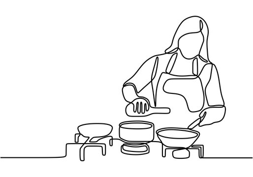

Random facts about me:

The kitchen is my zen place. From experimenting with new recipes to mixing batters, baking and cooking is where I find peace and joy in creating delicious food and treats.

Whenever I feel creative or on adventure with my family, I always carry camera with me. I love the art of preserving memories in their most authentic form. You can find my videos on YouTube

Reading is my escape from reality. When I find a moment of silence, I immerse myself with books and articles on various topics.